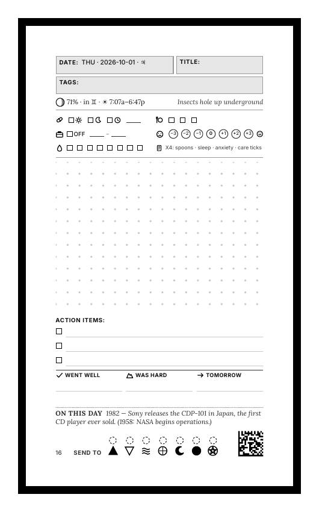
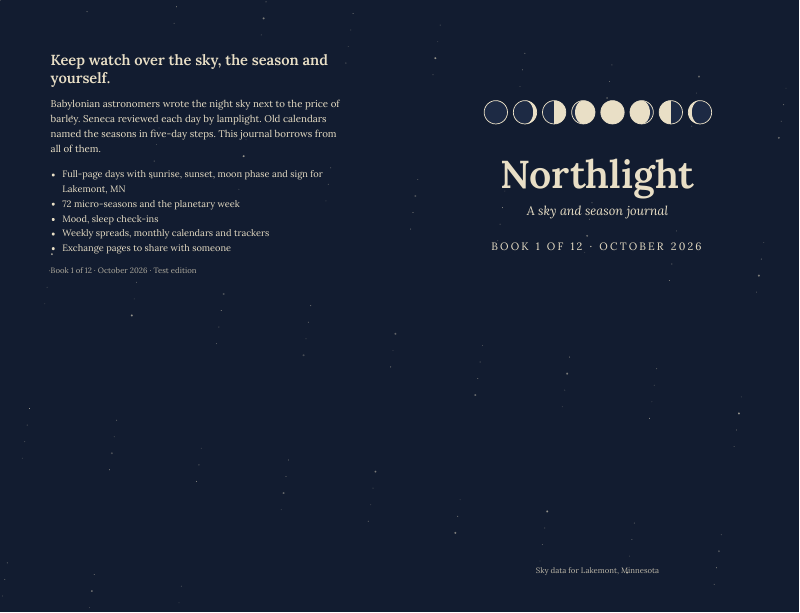
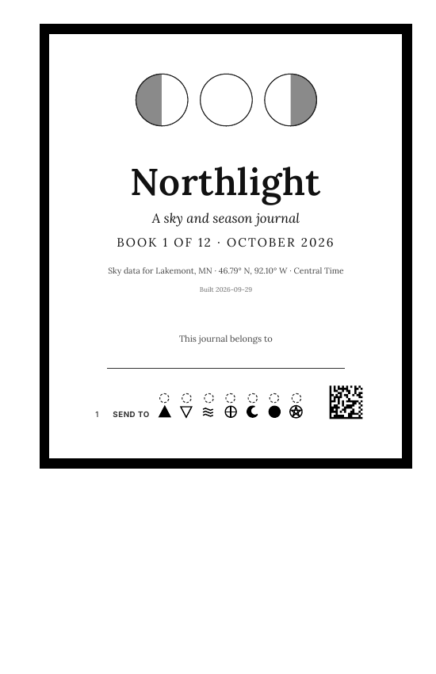
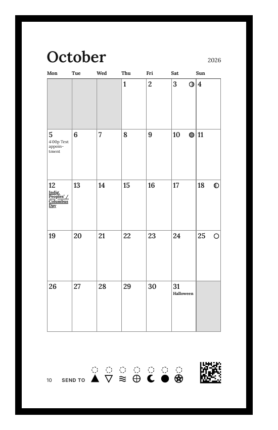
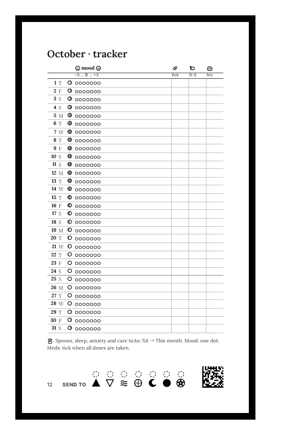
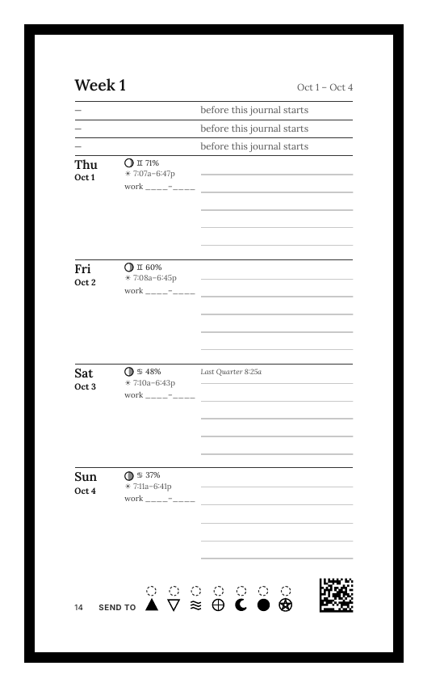

Journalwright Studio
Design a journal.
Print it as a book.
A calm toolkit for making physical journals and planners that fit the way you live. Arrange the pages in a visual editor, get print-ready PDFs for Amazon KDP, and keep an e-ink reader in your pocket if you want one.
The demo uses sample data only. Nothing is saved to a server.

What it is
Journalwright Studio turns a small set of building blocks into a whole book: a day page you arrange, weekly and monthly spreads, a calendar, a tracker, back matter. You choose what goes on the page. The studio keeps the printing rules straight.
-
Block editor
Drag check-ins, notes, time blocks and more onto the day page. See it at real size as you go.
-
Book canvas
Every page of the book in spreads. Zoom out to plan, zoom in to fix one page.
-
Print-ready
KDP trims, no Type 3 fonts, page limits and an overflow check on every page.
-
E-ink companion
Optional. An Xteink X4 shows today, takes button check-ins and stays offline.
Paper first, e-ink alongside
The paper book is the record. The X4 does the few things paper cannot: it shows today without power, and it takes a one-press check-in when you have no pen.
- Paper holds the writing, the plan and your safety plan. Monthly books in 5.5×8.5 and 8.5×11.
- E-ink holds today on the sleep screen and the quick counts. Firmware for the Xteink X4.
- Offline. No accounts, no feeds, no notifications. It only talks over its own hotspot.

The block editor and the book canvas
Two views of the same book. The Day view is where you arrange one page. The Book view shows all of it.
Day view
- Drag from the palette onto the list, or straight onto the page.
- 28 block types and 8 presets: care grid, spoons, scales, time blocks, lined notes, sketch box.
- A writing-space meter tells you before a page runs out of room.
- Start from a method with one click.
Book view
- Every page in spreads, with a legend and a jump menu.
- Zoom from the whole month down to one page.
- Hidden pages are shown, so nothing goes missing quietly.
- Fixed scan zones stay fixed, so every page can be identified.
Sample data only. A banner in the editor says so, and nothing is sent anywhere.
A library of 44 methods
Every block comes from research, not guesswork. Forty-four short docs cover the journaling and planning methods people actually use, what each is good at, and where each one goes wrong.
- Bullet journal
- Morning pages
- Time blocking
- Dutch door
- Habit tracking
- Spoon theory
- Pomodoro log
- Dream journal
- Stoic journaling
- Hobonichi techo
- Safety planning
- Prompt journaling
- Shadow growth
- Five-year diary
- Sensory journaling
Sample pages
Rendered from the generic sample profile and sample events. No personal data.

Title
Month
Tracker
Week- Day
Build your own in three steps
-
Make your profile
Copy
journal/content/profile.example.jsonand fill in your name, book title, place, time zone and the modules you want. -
Arrange the pages
Open the editor, drag blocks onto the day page, check the Book view, and save your layout.
-
Build and print
One command writes every interior and cover PDF. Upload them to Amazon KDP as a private proof first.
cd journal && npm ci && npx playwright-core install chromium
KW_PROFILE=content/profile.example.json KW_OUT=out-sample node render.mjs month 2026-10 test.ics
KW_PROFILE=content/profile.example.json KW_OUT=out-sample node editor/build.mjs # then open editor/dist/site/index.htmlPrivacy, as a promise
Journals are personal. The tools are built so that your data stays yours.
- Calendars are never committed and never uploaded unencrypted.
- Personal books leave the build only inside a password-protected archive.
- This site, the editor demo and the sample cards use generic sample data only.
- The e-ink companion sends nothing anywhere except over its own hotspot.
Roadmap
| Area | What | Status |
|---|---|---|
| Block editor | Day page blocks, presets and methods | Ready |
| Book canvas | Spreads, zoom, hidden pages | Ready |
| KDP output | Interiors, covers, checks | Ready |
| Profiles | One file for who and where | Ready |
| Content packs | Regional resource lists as data | Next |
| Book scopes | Quarter, season, half-year, year, undated; automatic volumes | Coming |
| Versioning | History, branches, forks and releases, shown visually | Coming |
| E-ink | Hardware bring-up on the Xteink X4 | In progress |